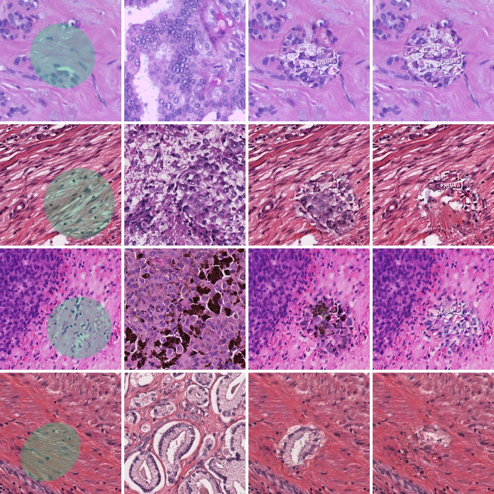
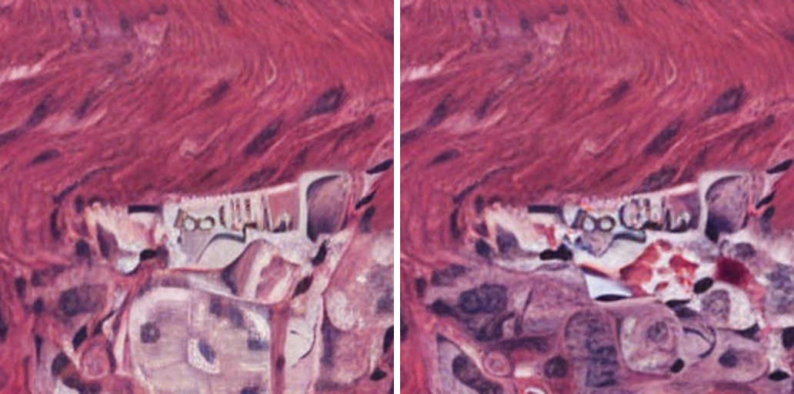

INFERENCE RECORD / NOT A REPRODUCTION
乳腺上听参考图，
别的器官不一定。
用作者发布的 attention 权重，在 BACH 和论文自己用过的 TIGER、PUMA、RINGS 上各取 40 个窗口，同一位置分别给肿瘤参考和良性参考，比较 mask 内新出现的肿瘤细胞。乳腺两套数据差值 +35.9 / +23.4 个百分点，黑色素瘤 +12.6，前列腺测不出（细胞分类器不认前列腺癌核）。没有训练、没有复算论文的 FID/KID 或下游 Dice，本页不声称复现。
attention.pt + SD-Inpainting UNet + sd-vae-ft-mse为什么跑它
PathoGen 的本意是数据增广：在良性组织里按 mask 画出病灶，mask 就是分割标签。我们关心的是反过来的用途——它能在已知位置造出原图里没有的肿瘤细胞，这正是「修复模型编造细胞」的带真值样本，可以拿来训练和评估幻觉检测器。这个用法是本站自己的设想，论文没有提。
所以要先回答一个前置问题：给肿瘤参考时，它是否真的比给良性参考更容易在 mask 里生成肿瘤细胞？换成论文自己的数据集，这件事还成立吗？
怎么测
每个数据集取 40 个目标窗口（512²，约 0.45–0.5 µm/px，对应模型输入「1024² @ 0.226 µm/px 缩到 512」），选标注里病灶最少的区域；在非病灶组织最深处放一个约占窗口 21% 的椭圆 mask。参考图来自别的切片/病人：肿瘤参考取病灶最密的窗口，良性参考取无病灶窗口。每个组合跑 4 个种子，直接取解码输出，不回贴原图。
计数用 CellViT-SAM-H（PanNuke 五类）。把窗口切成 128 px 网格，只看原图里肿瘤核 ≤1 的格子，若输出里 ≥3 个即记一次「伪造」。mask 外的同一统计作为分割器噪声底。
数据
| 数据集 | 器官 | 本页使用的部分 | 尺度处理 | 病灶 / 良性定义 |
|---|---|---|---|---|
| BACH test | 乳腺 | 40 张测试图（非 PathoGen 训练集） | 0.42 µm/px 原样 | CellViT 肿瘤核计数 |
| TIGER | 乳腺 | wsirois / tissue-bcss，151 个 TCGA ROI | 0.5 µm/px 原样 | 浸润癌 + 原位癌 / 其余组织 |
| PUMA | 黑色素瘤 | 公开训练集 206 个 ROI | 0.226 → 缩到 512 | tissue_tumor / 其余组织（无纯良性图） |
| RINGS | 前列腺 | TEST 500 张，8 个病人 | 原样（目测约 0.45–0.5 µm/px） | MANUAL TUMOR / 无肿瘤区 |
| KPI | 肾 | 未使用 | — | 需 Synapse 申请访问，未取得 |
结果
| 数据集 | 肿瘤参考 伪造率 | 良性参考 伪造率 | 差值（95% 区间） | mask 外噪声底 |
|---|---|---|---|---|
| BACH（乳腺） | 52.3% | 16.3% | +35.9 [+23.8, +48.4] | 4.1% |
| TIGER（乳腺） | 38.0% | 14.6% | +23.4 [+13.0, +35.2] | 1.1% |
| PUMA（黑色素瘤） | 44.7% | 32.1% | +12.6 [+4.0, +22.0] | 11.5% |
| RINGS（前列腺） | 5.9% | 11.6% | −5.7 [−12.9, +0.9]，不显著 | 0.6% |
乳腺：两套数据都显著，参考图确实在控制生成内容。但良性参考也有约 15% 的伪造，说明它会「顺手」画出细胞团，不完全按参考类别。
黑色素瘤：差值仍为正，但 mask 外噪声底就有 11.5%，SAM-H 在这类组织上分类不稳，这个差值要打折扣。PUMA 每张图都含肿瘤，良性参考本身也不干净。
前列腺：目测两种参考都在间质里插入了腺体样结构，肿瘤参考的更像腺体；但 SAM-H 基本把这些核判成结缔组织而不是肿瘤。这里的负结果说明指标在前列腺上失效，不能据此说模型不可控。
样例与伪影


已知局限
- 只跑推理：没有训练，没有复算论文的 FID/KID（只在补充材料表 2，未取得）与下游分割 Dice，因此与论文数字无法对照。
- 划分不一致：作者按切片划出 20% 测试集，但名单未公开；TIGER / PUMA / RINGS 上用到的图可能在其训练集里，结果可能偏乐观。发布的
attention.pt也未说明用哪些数据集训练。 - mask 与论文不同：这里用椭圆 mask，论文是随机区域外扩 50–200 px。
- 评估依赖分割器：结论全部建立在 CellViT-SAM-H 的 PanNuke 五类上；黑色素瘤噪声底高，前列腺基本测不出。
- 样本集中：RINGS 只有 8 个病人，40 个目标里 33 个来自 P5、P2；PUMA 无病人编号，同一病人可能同时出现在目标与参考。
- 目标窗口不总是良性组织：TIGER 有些按标注无病灶的窗口其实是血液或「rest」区域。
文件位置
| 路径 | 内容 |
|---|---|
/data1/kxchen/pathogen | 官方代码 @ 388b1ff + run_bach.py（唯一改动：VAE 改从本地目录加载） |
/data1/kxchen/data/pathogen_orig | TIGER / PUMA / RINGS 原始数据 |
/data1/kxchen/data/pathogen_<ds> | pairs.json、目标图、mask、参考图、out/ 生成图、eval_* 计数结果 |
/data1/kxchen/hallu/RECORD.md | 实验记录与数字出处 |
来源
- PathoGen 论文（arXiv:2601.08127）与官方仓库、attention 权重。
- 数据：TIGER（AWS Open Data，CC BY-NC 4.0）、PUMA（Zenodo 15050523，经 Hugging Face 镜像 csmp-hub/puma 下载）、RINGS（Mendeley，CC BY 4.0）、BACH。
- 本页数字全部来自服务器端
pathogen_summary*.txt，未手工改写；样例图由对应 PNG 直接缩放拼接。